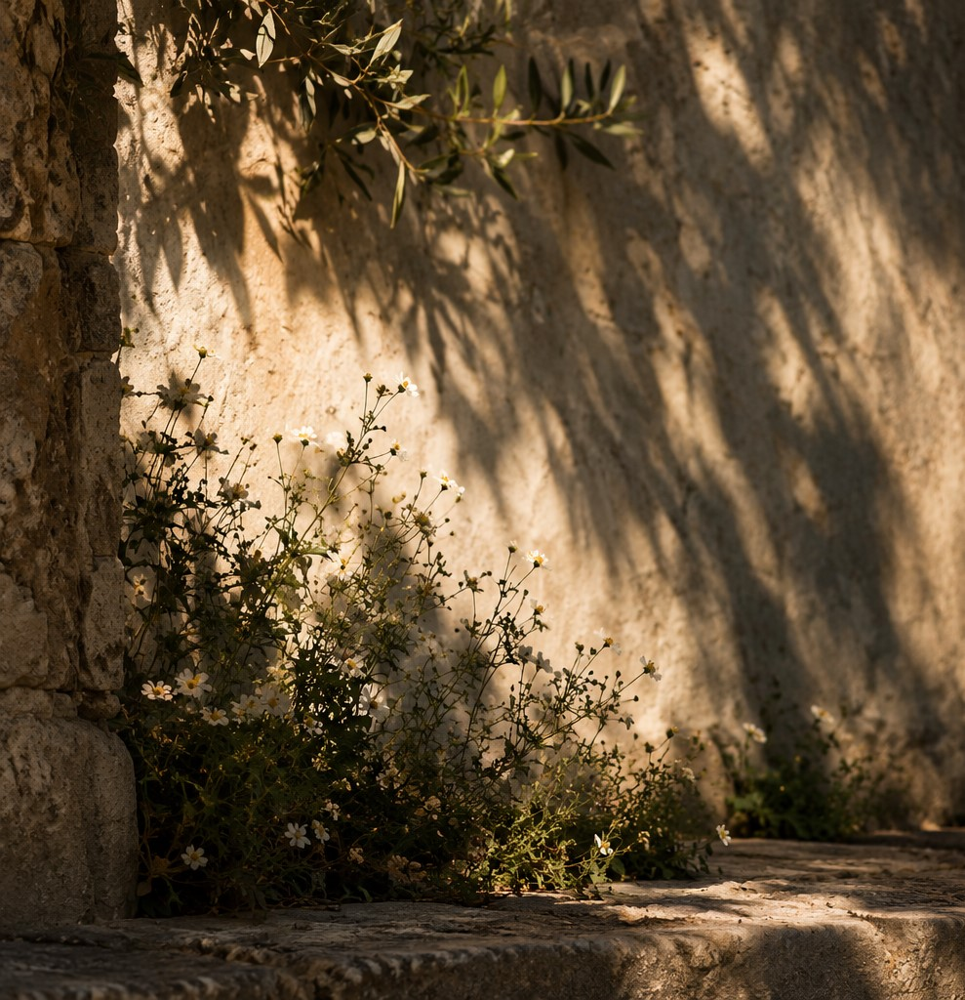
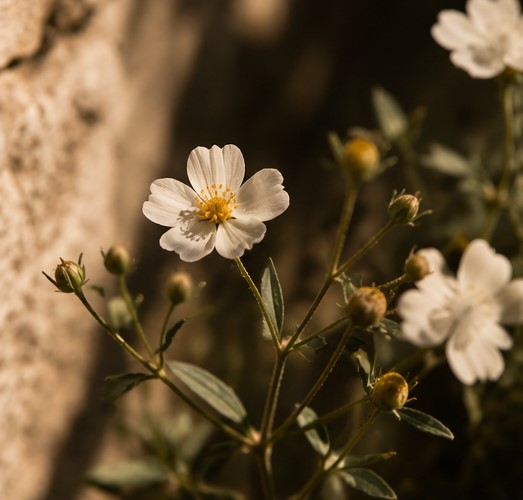
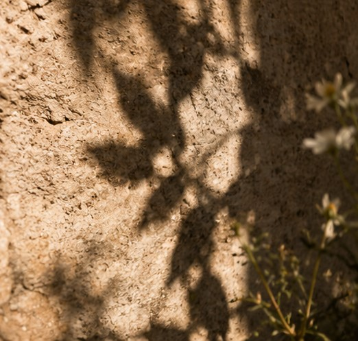
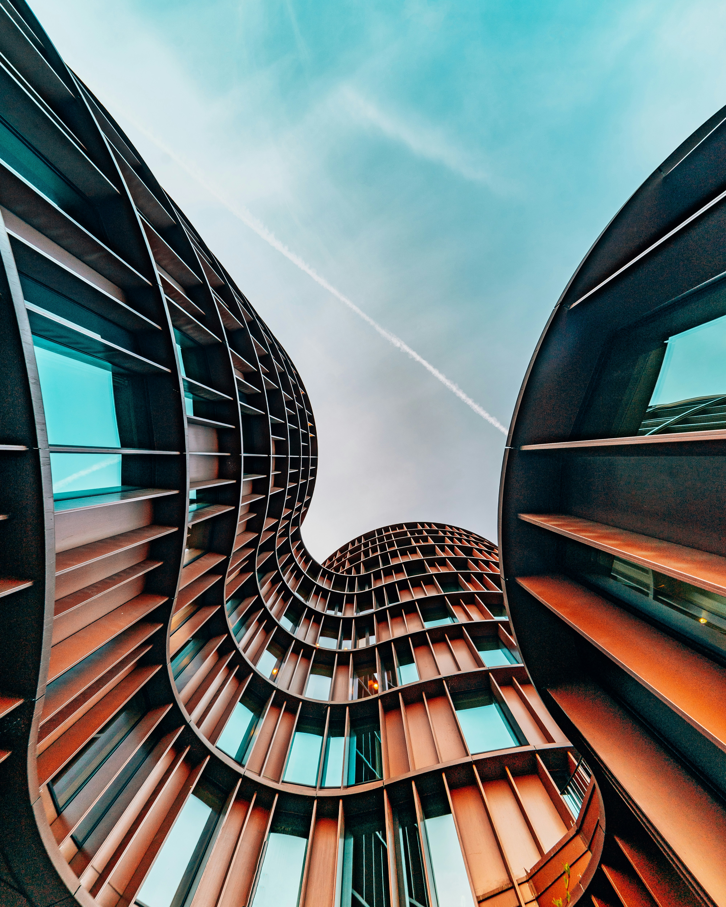
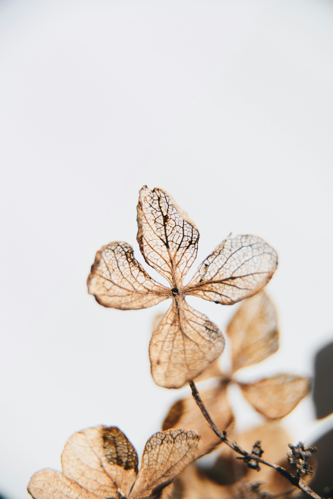
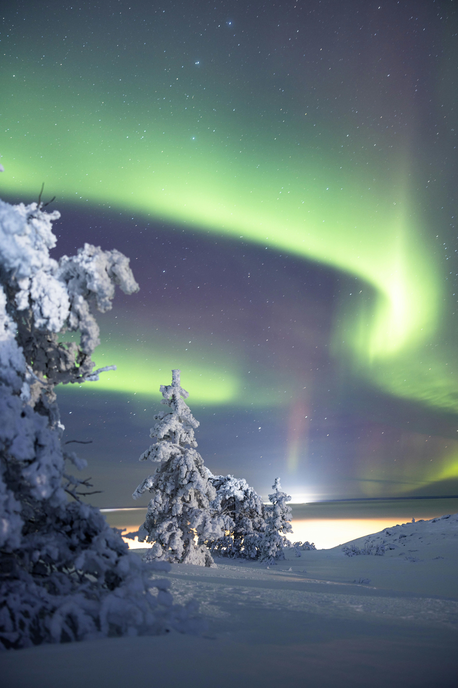
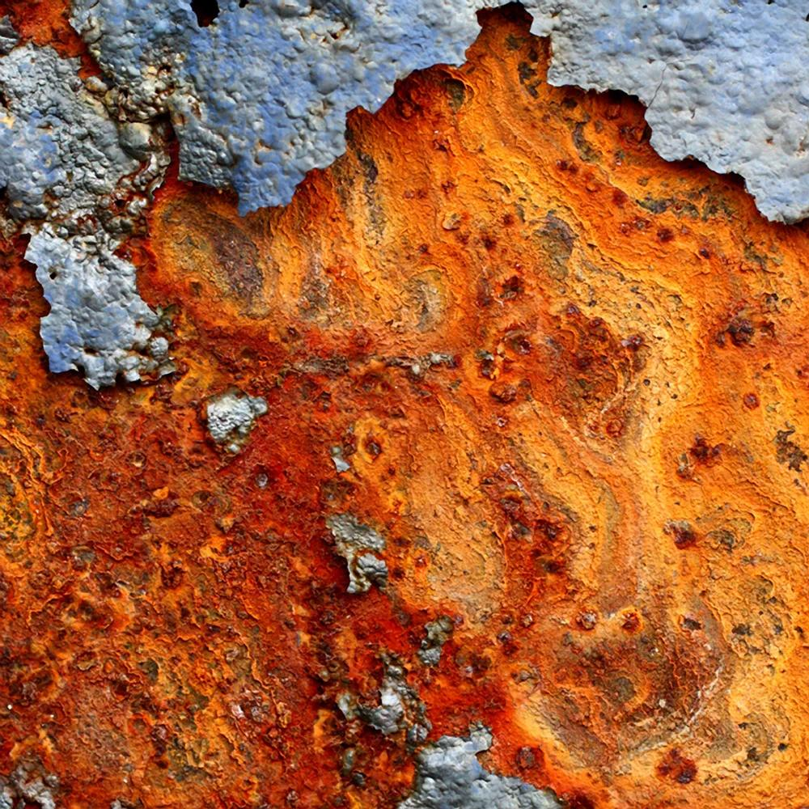

LOOK
CLOSER.
Things worth noticing.
Some things don't ask for attention. They're worth noticing anyway.
EXPLORE THE FRAMES


02 / THE ART OF NOTICING
Little details.
Infinite worlds.
Beauty doesn't always ask to be seen. Sometimes, it's a shadow that lasts a moment, a reflection that changes with the light, or a familiar place seen differently.




Look closer. There is always more to see.
03 / TWO PERSPECTIVES
Same world.
Different lights.
One moment, two ways of seeing it. Colour reveals its warmth. Monochrome reveals its soul.